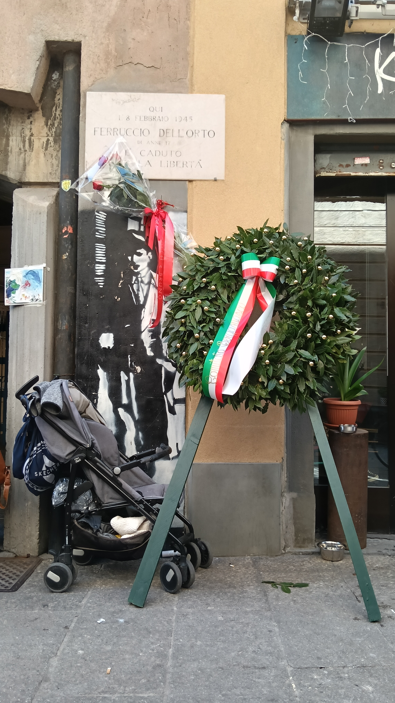
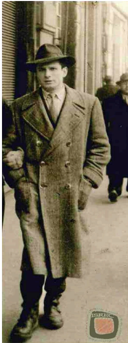

Historical context
We are in Via Pignolo 10. During the Nazi-Fascist occupation, this corner of Bergamo represented an invisible boundary between everyday life and terror. Just a few steps from here stood the GNR: the police force of the Fascist regime, composed of Italians who chose to collaborate with the German occupiers. Their units were notoriously feared for their brutality in hunting down partisans and for the torture inflicted in the basements of the nearby barracks in Via Francesco Nullo.
The GNR (National Republican Guard), established in 1943 by the Italian Social Republic (Salò Republic), was a military force composed of Italians loyal to Fascism and the Germans. In Bergamo, the GNR was not only a military force but also functioned as a political police. Its task was to monitor the population, hunt down draft evaders, and above all dismantle local partisan cells. Its main operational base was the Nullo barracks, which became infamous as a site of detention and torture. GNR soldiers knew the territory as well as the partisans, making the conflict fratricidal and ruthless: they used informants and spies to locate resistance fighters, applying brutal interrogation methods to extract names and addresses of clandestine bases. The GNR represented the last stronghold of a regime that, feeling under siege, responded with widespread violence aimed at crushing any aspiration for freedom before it could turn into open insurrection.
🎧 Audio Reading
Why it is a place of memory
Right here, on 8 February 1945, the life of a 17-year-old ended. Ferruccio Dell’Orto, a student at the Vittorio Emanuele Institute (nom de guerre “Marco”), was exactly where you are now for a very risky action: disarming a Fascist officer to seize his weapons. A firefight broke out: Ferruccio was hit in the leg and fell to the ground. Instead of receiving medical care, he was dragged by GNR soldiers to the nearby barracks. In critical condition, he was subjected to inhumane torture and, despite everything, chose complete silence. He died that same evening inside the Nullo barracks, less than one hundred meters from here, without betraying a single word about his comrades. Ferruccio’s story is not an isolated case but part of a broader phenomenon in the Bergamo Resistance: the central role of young people. Many students, apprentices, and very young workers made a conscious political choice, driven by disillusionment with twenty years of dictatorship and the collapse of Fascist promises. For many, 8 September 1943 marked not only the end of an alliance but the final break with an authoritarian system that had suppressed freedom and critical thought. Young people between 17 and 23, students or workers, actively joined the clandestine struggle. Students were among the most present groups in the Resistance, showing how antifascism in the final years of the war gained strength precisely among generations raised under the regime but increasingly disillusioned by it.
🎧 Audio Reading
Multimedia content


In-depth: GAP units in Bergamo
The GAP (Patriotic Action Groups) represented the most daring and dangerous component of the Resistance. Unlike the Garibaldi Brigades or the “Giustizia e Libertà” formations operating in the Bergamo valleys, GAP members acted inside the city, between Città Alta and historic districts such as Via Pignolo. They were organized into small autonomous cells of 3–4 people to minimize infiltration risks. Their mission was “attrition”: sabotage of telephone and railway lines, disarming officers to seize weapons, and targeted attacks on command centers. Their strength was invisibility: GAP members were often workers or students, like Ferruccio Dell’Orto, who lived apparently normal lives before striking from the shadows. This choice meant extreme psychological isolation, since unlike mountain partisans they had no safe territory or uniforms: if captured, they were treated as illegal combatants rather than prisoners of war.
Sources
Bibliographic sources
- Mario Pelliccioli, Memory Itineraries. A journey through Bergamo between Fascism, German occupation and Resistance, Moltefedi Achille Grandi Editore, Bergamo 2023
- Angelo Bendotti, 33... and he ran, in Banditen. Men and women in the Bergamo Resistance, Il filo di Arianna, Bergamo 2015, pp. 547–559.
- Santo Peli, Stories of GAP. Urban terrorism and Resistance, Einaudi, Turin 2014.
- Biographical Dictionary of Bergamo Partisans (ISREC)
Multimedia sources
- Image 1: Project photographic archive, class 5IG ITIS P. Paleocapa
- Image 2: Gramsci Bergamo archive
- Video: Ferruccio Dell’Orto documentary, BGREPORT YouTube channel